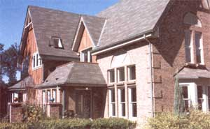

Build A Solar Home And Let The Sunshine In
August/September 2002
Energy & Environment
By Dan Chiras
If you're planning to build your dream home someday, this article could save you thousands of dollars. Including simple, passive-solar features in any style home can cost next to nothing up front and save you unbelievable amounts over the long-term in reduced energy bills.
Millions of homes easily could be designed to capture free heat directly from the sun. But instead we are burning-wasting-huge amounts of oil and natural gas every winter. The missed opportunities to tap into solar energy are so fantastic they boggle the mind, and nowhere is our blindness to the potential of solar more troublesome than in the home-heating arena.
You can incorporate passive-solar heating in any style home, as the photos that accompany this story show. Or you can add solar features when remodeling an existing home, as long as the south side of the house receives full sun most of the day. When correctly designed, solar homes provide unrivaled comfort in winter and summer They offer large, south-facing windows, generous views, sunny interiors and open floor plans.
Architect Debbie Rucker Coleman, who has been designing solar homes since 1985, says her clients are impressed with how spacious the sunlight makes the home feel. "In addition to low heating bills, passive-solar homes are cool in summer. They are delightful places to live," she says.
Coleman's drawings show how two conventional house styles could easily become passive-solar homes.
HOW IT WORKS
Heating homes with sunlight, known as passive-solar heating, is based on the simple idea of using south-facing windows to admit low-angled winter sun. Sunlight streaming into the home warms the interior space. Thermal mass, such as tile floors and interior masonry walls, stores the sun's heat and releases it when room temperatures fall at night or during cloudy weather. Choose a house design that accommodates the right amounts of south-facing glass and thermal mass. Add careful caulking and ample insulation (usually slightly higher than building codes currently require), and you'll have a solar heated home that requires little or no heat from any nonrenewable fuel source. In the summer, a solar home's thermal mass and insulation, together with properly sized overhangs to shade the windows, keep the home comfortable and reduce cooling requirements.
Simply orienting a conventional house to the south will cut annual energy bills by at least 10 percent, saving thousands of dollars over a home's lifetime. Add a long south-facing wall of windows and some thermal mass and you easily can tap sunshine's free energy to meet 50 percent to 70 percent of a home's heating requirements. Do your homework or hire a solar architect to create a rigorous passive-solar design and you can reduce your energy bills by 80 percent to 100 percent. Given the probability energy costs will increase steadily in the coming years, the long-term savings from a passive solar home could become very substantial, as we'll show in detail below.
UP-FRONT COSTS
According to Ron Judkoff, director of the Buildings and Thermal Systems Center at the National Renewable Energy Lab in Golden, Colorado, passive-solar features increase the cost of building a new home by anywhere from nothing to about 3 percent. (On a $200,000 home, for example, the maximum additional cost of incorporating passive solar heating might be only another $6,000.) Since many building codes now require much more energy-efficient windows, walls, ceilings and foundations than in the past, and you'll need a much smaller furnace or other backup heat source, passive solar frequently adds very little or nothing to the cost of a new home.
Judkoff bases his cost estimates in part on a series of case studies sponsored by NREL and the American Solar Energy Society, headquartered in Boulder, Colorado. (See "Comparing Passive Solar Savings".) Data on passive-solar homes were collected from a variety of locations across the United States. The study found the addition at cost of building a passive-solar home ranged from nothing to 3 percent, while the annual savings from passive-solar heating in the homes ranged from $220 in New Mexico to $2,255 in New Hampshire. Based on recent energy prices, a passive-solar home in a northern location could save you as much as $67,000 on heating and cooling costs over a 30-year period.
We all know energy prices are only going to rise. Some regions already have experienced sudden 100-percent spikes in natural gas prices. Major increases in natural gas and oil prices seem inevitable. (See "Running Out of Gas.") Without an inexpensive, reliable fuel source, millions of homeowners who rely on natural gas and oil may suffer enormous economic hardship. So let's take another look at those estimated cost savings from the NREL and ASES case studies. If we assume a 5 percent annual increase in energy costs, the potential 30-year savings from a passive solar home jump to $141,400, quite a return on a maximum investment of just 3 percent of your construction costs. If energy prices increase 10 percent per year, the estimated 30-year savings in cold climates could be more than $400,000.
No one knows for sure how fast fuel prices will increase. But whatever happens, passive solar clearly makes fantastic sense from a financial standpoint. And the bonus is the environmental benefit of reduced air pollution. Coleman estimates that compared to the average home, her 2,100-square-foot solar home-with its average heating or cooling costs of $12 per month will save 574,410 pounds of carbon dioxide emissions over 30 years.
Solar Homes Tour
More than 800 solar homes will be showcased on October 5, 2002, as the American Solar Energy Society hosts the 2002 National Tour of Solar Homes.
On the ASES tour, homeowners and businesspeople will explain how their photovoltaic and passive-solar systems work, and how solar energy can maximize your home's energy efficiency and cut your water heating bills. For a tour near you, visit the ASES Web site at www.ases.org or call (303) 443-3130.
To harvest free energy from the sun, just orient the long side of the house to the south, add more windows to the south side and pay attention to overhangs, as we've shown for this conventional ranch house (above) and colonial-style home (at right)
SOLAR DESIGN BASICS
Here are the basic principles to follow in designing a new or remodeled passive solar home:
1. Choose a site that receives south sun during winter. Obstructions to the south of the site, such as tall evergreen trees, buildings or hillsides, need to be kept at least 1.7 times their height away from the home. When in doubt, visit the site around December 21, when the sun is the lowest in the sky. The site should receive full sun from 9 a.m. to 3 p.m.
If you're choosing to build on a small lot, select one that is deep from north to south, to ensure good solar access. Locating the house's septic drainage field within the solar access zone is another strategy for maintaining good solar access, since that area will need to be kept clear of trees and shrubs, which would otherwise block the southern sun.
2. Choose a home design with few projections below the roof line and no porches on the south. Projections shade adjacent windows; porches on the south prevent the sun from entering. Porches on the east and west can be beneficial by shading windows from the hot summer sun.
3. Orient the longest wall of the house so it faces true south. Rectangular floor plans minimize the exposure of east and west walls to summer sun, which is especially helpful in hot climates. The front, back, or side of the house can be the south wall. (True south is not the same as the magnetic south shown by compasses. Check with a local surveyor's office to find out how many degrees to adjust from magnetic south.)
Can you deviate from a due south orientation? Sure, but you'll pay a price in dollars and thermal comfort. Straying from a solarsouth design reduces wintertime heat gain and may increase summertime solar gain, leading to overheating.
The more rooms that have some south windows, the better. This helps eliminate the need for fans or ducts to move warm air from one area to another. Place rooms that require less heat, such as workshops, bedrooms and kitchens, on the north side of the house.
4. Maximize windows on the south side. South glass should be a minimum of 7 percent of the house's square footage for a sun-tempered home and a maximum of 12 percent for fully passive-solar designs. Don't go wild on windows. North, east and west windows should follow the "Window Allocation Guidelines". Exceeding the 12 percent guideline for south windows may cause the home to overheat in summer, and may allow excess heat loss from the windows during the night and during long, cold, cloudy periods.
Coleman recommends choosing south glass carefully for your climate. Many of the new low-emissivity (low-e) coatings reduce heat loss and gain, but for south windows you do not want glass that keeps out the solar heat. She recommends south glass that has a Solar Heat Gain Coefficient (SHGC) of at least 0.5. In warmer climates with properly designed south overhangs, uncoated double-parre glass is preferred.
5. Design the roof overhangs to shade windows properly from the high summer sun. Overhangs are key to successful solar homes. Judkoff says the exact geometry of overhangs is critical for balancing the need to admit maximum sunlight in winter and minimize solar heat gain in summer. Generally, the warmer and sunnier the climate, the deeper the overhang should be. A 2-foot overhang nicely shades an 8- to 9-foot wall in most locations. Coleman recommends the Wet) site www.susdesign.com/overhang/index.html to help you design overhangs properly. If overhangs aren't possible, use insulated shutters to keep out the summer sun.
6. Provide thermal mass (tile floors and brick or masonry walls) in the south side of the house. Mass absorbs and stores heat when sunlight strikes it or when its temperature is lower than the air temperature. As the room's air temperature drops below the mass' surface temperature, heat is released and the air is warmed. Temperatures indoors remain relatively stable and comfortable, despite dramatic oscillations in outdoor temperatures.
The mass in floors, framing, wallboard and furniture is usually sufficient to accommodate the solar heat in sun-tempered homes. But when you build a full passive solar design with 'up to 12 percent south glass, you need to add extra thermal mass in the form of tile, concrete floors, or masonry walls or planters. For optimal results, some mass should be in direct contact with the incoming sunlight throughout the day. The mass also should be distributed throughout the house. Add about 7 square feet of 4-inch-thick mass for every 1 square foot of south glass above the 7 percent minimum. One easy, inexpensive way to add this mass is to choose a concrete slab-on-grade foundation.
In addition to these solar design factors, follow these two principles that apply to all energy efficient homes:
7. Insulate and seal the structure well. Careful attention to detail is essential. Insulation should not be compressed and air should not leak in. If you can't get as much south glass as you would like, adding extra insulation can result in the same overall lower energy consumption. judkoff recommends insulating at least to the level prescribed by the International Energy Conservation Code or ASHRAE 90.2, which are region-specific recommendations for the building-envelope elements and mechanical systems. Choose energy-efficient windows and consider using insulated shades to keep heat from escaping at night (and to keep the heat out in the summer), especially in cold climates. Entryways separated from the main living space by an, inner door are especially helpful in preventing cold air from rushing in whenever the outside door is opened.
8. Correctly size the heating and cooling system. Many solar homes require almost no additional heat, so you will need a much smaller, less expensive heating system. A woodstove or natural gas wall heater may be sufficient, or you can connect baseboard radiators to your hot water heater. The insulation and thermal mass features of a solar home make it more resistant to summer overheating, and in some climates you may get by with using ceiling fans instead of air-conditioning.
HELPFUL DESIGN TOOLS
Many professional solar designers use powerful new software like Energy-10, a computer program that allows designers to predict the energy performance of various building-design strategies, permitting a fine tuning of designs to achieve optimal comfort, performance and economy. (Energy10 is available from the Sustainable Buildings Industry Council. See "Resources." ) Designers also use a Solar Pathfinder www.solarpathfinder.com ), a $255 device that allows a budder or architect to fully assess the year-round solar potential of a site in about 15 minutes.
Debbie Rucker Coleman prefers a simpler approach using Passive Solar Design Strategies: Guidelines for Home Building by the Sustainable Buildings Industry Council (see "Resources") . "Most homeowners would be able to follow these guidelines, as the notebook is put together very well. I like the program because it tells you the percentage Of Your heating needs the sun is providing and lets you compare strategies such as adding insulation or increasing south glass. You can complete the work sheets manually or with the computer software version."
SIMPLE SOLAR SOLUTIONS
So what are the worst-case consequences if you follow the basic principles, but don't want to perform your own detailed energy analysis or hire a professional to do it for you? Less-than-optimal amounts of south-facing windows may require running an auxiliary heating system more, or may necessitate adding another log to the woodstove or putting on a sweater. Undersized mass will cause winter daytime overheating, which is easily remedied by opening windows.
A less-than-perfect passive-solar design can be remedied after construction. What you cannot easily change later is the basic shape, design and orientation of the house. That's why a well-insulated, south-facing structure is the essential foundation for a comfortable passive-solar home.
Resources
BOOKS AND PLANS
The Solar House: Passive Heating and Cooling by Dan Chiras.
Sun-inspired Home Plans by Debbie Rucker Coleman. Available from Energetic Design: (888) 667 6587; www.sunplans.com
The Best of Fine Homebuilding: Energy EfficientBuilding by Fine Homebuilding.
Solar Energy: Today's Technologies for a Sustainable Future by Burke Miller.
VIDEOS
The Solar-Powered Home with Rob Roy. An 84-minute video examining basic principles, components, set up and system planning for an off-grid home. Features tips from America's leading experts in the field of home power. Available from Earthwood Building School. (518) 493-7744; www.cordwoodmasonry.com
ORGANIZATIONS
AMERICAN SOLAR ENERGY SOCIETY. Publishes Solar Today magazine and sponsors an annual national meeting. Also publishes an online catalog of publications and sponsors the National Tour of Solar Homes. (303) 443-3130; www.ases.org
CENTER FOR RENEWABLE ENERGY AND SUSTAINABLE TECHNOLOGIES (CREST). Online source of renewable energy solutions. www.crest.org
FLORIDA SOLAR ENERGY CENTER. Offers design guidelines for building homes in hot, humid climates. (321) 638-1000; www.fsec.ucf.edu
ALLIANCE TO SAVE ENERGY. Excellent information on saving energy and money. (202) 8570666; www.ase.org
NORTHEAST SUSTAINABLE ENERGY ASSOCIATION. Green-building, clean-energy and Sustainable transportation site. (413) 7746051; www.nesea.org
NATIONAL RENEWABLE ENERGY LABORATORY, CENTER FOR BUILDINGS AND THERMAL SYSTEMS. Key players in research and education on energy efficiency and passive-solar heating and cooling. (303) 3847349; www.nrel.gov/buildings/ high performance
SUSTAINABLE BUILDINGS INDUSTRY COUNCIL. This organization has a terrific Web site with information on workshops, books and publications, and links to many other international, national and state solar-energy organizations. (202) 628-7400
Running Out of Gas
Most Americans remain unaware that we have already consumed nearly half of our known of Gas domestic natural gas.
Passive-solar heating is vital to our energy future as the two dominant players in the home-heating market, natural gas and home heating oil, are being depleted. Most Americans remain unaware that we have already consumed nearly half our domestic natural gas. In Texas, energy companies drill 17 new gas wells a day-6,400 wells each year-just to maintain current production levels, say Randy Udall, director of the Community Office for Resource Efficiency in Aspen, Colorado, and Steve Andrews, an energy analyst. The United States is now the world's largest importer of natural gas, most of which comes from Canada.
But just as in Texas, gas production in western Canada is declining. Twenty new wells are drilled every day just to keep production from failing, causing Canadians to worry about future supplies for their own country. Consequently, some Canadians are balking at increasing their export of natural gas to their energy-hungry neighbor to the south. Importing natural gas from any but our land-linked neighbors will be costly and difficult.
Like natural gas, oil production in the United States has been dropping since 1972. Many energy analysts predict global oil production will peak between 2005 and 2010. Then demand will begin to outstrip supply, sending prices up, up and away.
Passive-solar heating provides warmth and comfort, and can replace declining fossil fuel resources economically, with a fraction of the environmental impact. Passive-solar heating is crucial not only to individuals but to the well-being of the nation and the world economy.
|
|
|
|
|
|
|
 |
|
|
|
|
 |
 |
|
|
|
|
|